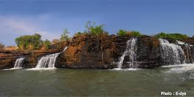
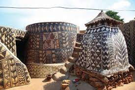
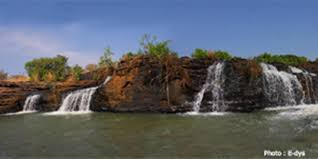
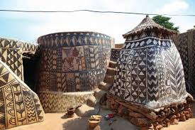

Présentation de la ville
Si vous cherchez une ville pleine de charme, de couleurs et de rythmes, alors ouvrez grand les bras : Bobo-Dioulasso vous attend avec le sourire !
Située dans le sud-ouest du Burkina Faso, à environ 360 kilomètres de Ouagadougou, Bobo (comme l’appellent affectueusement ses habitants) est bien plus qu’une simple ville : c’est le cœur battant de la culture burkinabè, une ville joyeuse, authentique, et profondément attachante.
Nichée dans la région verdoyante des Hauts-Bassins, Bobo-Dioulasso s’étend sur environ 136 km², à une altitude d’environ 445 mètres. Elle profite d’un climat agréable et d’un environnement naturel paisible, entre rivières, arbres géants et terres rouges. Un vrai petit bijou !

À Bobo, chaque coin de rue raconte une histoire. Ici, les traditions ne dorment jamais : elles dansent, chantent, sculptent et sourient à tous ceux qui veulent les découvrir. Berceau de la musique traditionnelle, la ville résonne au son des balafons, des tambours et des voix puissantes des griots. Les festivals comme le FESTIBO vous feront vibrer au rythme des masques et des danses !

La ville regorge de sites magnifiques à visiter : la Grande Mosquée, le vieux quartier de Kibidwé, le musée de la ville, la Guinguette ou encore le village de Koumi avec ses peintures murales traditionnelles. Chaque site vous plonge dans une nouvelle ambiance.
.jpg) 



Bobo, c’est aussi une ville accueillante et bien équipée. Des hôtels chaleureux, une gastronomie locale, des guides passionnés, et même un aéroport international pour venir facilement.
Que vous soyez en famille, en couple ou entre amis, une chose est sûre : Bobo-Dioulasso vous marquera à jamais. Entre découvertes, sourires et émotions, vous repartirez le cœur rempli de joie.
Alors, prêt(e) pour l’aventure ?
Bobo vous ouvre les bras. Et ici, chaque sourire est un trésor.